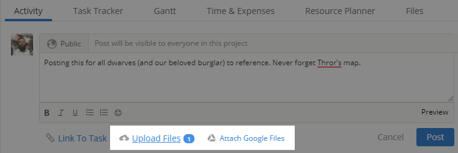
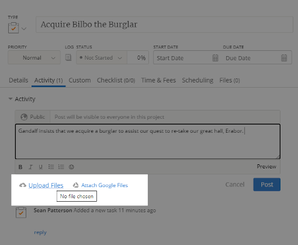

Upload Files to a Project
Sean Patterson | Last Updated June 02, 2021 23:58
Available in: Enterprise, Premier, Professional, Teams, and Free
Overview
You have two options for uploading files: directly to the Activity Feed or as part of an existing task. You may want to share important files for collaborators, information to clients, and so forth. Other users can conveniently access files from multiple locations around the project.
General Facts About Uploading Files:
- Mavenlink supports almost all file types.
- File size limitations: 2GB for a Teams plan, 5GB for a Premier plan.
- You can upload Google Drive files (Google Sheets, Google Docs, and so forth) if your user or business account is integrated with G Suite.
- All project collaborators can view basic details for a file upload from the Files tab of the project or the Files page (Dashboard > Files). Basic details include: Date Added, Size, Uploaded By, and Linked Task.
- All project collaborators can download files from anywhere the file is accessible - the Activity Feed, the task Files tab, the project Files tab, or the Files page (Dashboard > Files). Note that the visibility of a post can be limited, thereby limiting access to the file.
- You can access all files uploaded to any project that you're assigned in your Dashboard menu. Hover over Dashboard in the navigation menu and select Files.
Upload Files Directly to the Activity Feed
- Navigate to the Activity tab of your desired project.
- Enter your post in the text area. You may want to explain which file you're uploading and why.
- Upload a file to the post:
- If you want to upload a file from your computer, click Upload Files and select your desired file.
- If you want to add a Google file, click Attach Google Files and select which file you want to add.
- Click Post to add your post with the attached file.
After finalizing your post, any user with access to the Activity Feed can download your file directly from your post. Users with the appropriate permissions can access these uploaded files from the project Files tab.
Upload Files to an Existing Task
- Navigate to your desired task.
- Click the Activity tab within the task.
- Upload a file to the post:
- If you want to upload a file from your computer, click Upload Files and select your desired file.
- If you want to add a Google file, click Attach Google Files and select which file you want to add.
- Click Post to add your post with the attached file.
After finalizing your post, it is added to the Activity Feed with a link to the correlating task.
Created on June 02, 2021 23:58